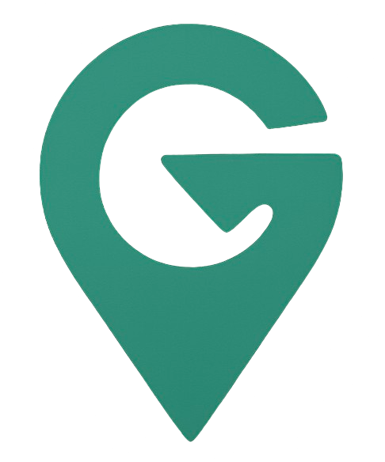

 Escolha a categoria
Bares
Restaurantes
Casas Noturnas
Locais Turísticos
Parques
Museus
Traçar Rota
Filtrar por lugares mais relevantes
Ou adicione locais específicos:
Adicionar à Rota
📷
Locais Adicionados:
< Voltar
Carregando mapa...
Posicione o endereço no retângulo
Capturar
Cancelar